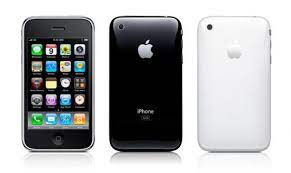

Galeria de Fotos

O iPhone 3GS (originalmente denominado iPhone 3G S) é um smartphone que foi projetado e comercializado pela Apple Inc. É o iPhone de terceira geração e sucessor do iPhone 3G. Foi revelado em 8 de junho de 2009 no WWDC 2009, que aconteceu no Moscone Center em San Francisco.
Este iPhone é chamado de "3GS", onde "S" significa velocidade (Phil Schiller mencionou isso na palestra de lançamento). As melhorias incluem desempenho, uma câmera de 3 megapixels com maior resolução e capacidade de vídeo, controle de voz e suporte para download de HSDPA de 7,2 Mbit / s (mas permanece limitado a upload de 384 kbps, pois a Apple não implementou o protocolo HSUPA). Foi lançado nos Estados Unidos, Canadá e seis países europeus em 19 de junho de 2009, na Austrália e no Japão em 26 de junho e internacionalmente em julho e agosto de 2009.
O iPhone 3GS executa o sistema operacional iOS da Apple. Foi sucedido pelo smartphone carro-chefe da Apple em 2010 pelo iPhone 4. Em 24 de junho de 2010 foi lançado um modelo de 8 GB, descontinuando os modelos de 16 e 32 GB. No entanto, o 3GS continuou em produção até setembro de 2012, quando o iPhone 5 foi anunciado.